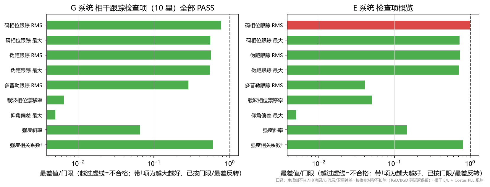
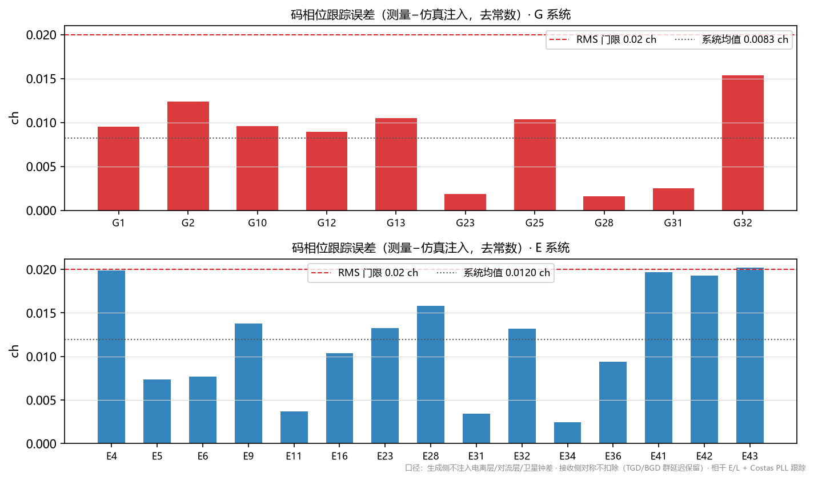
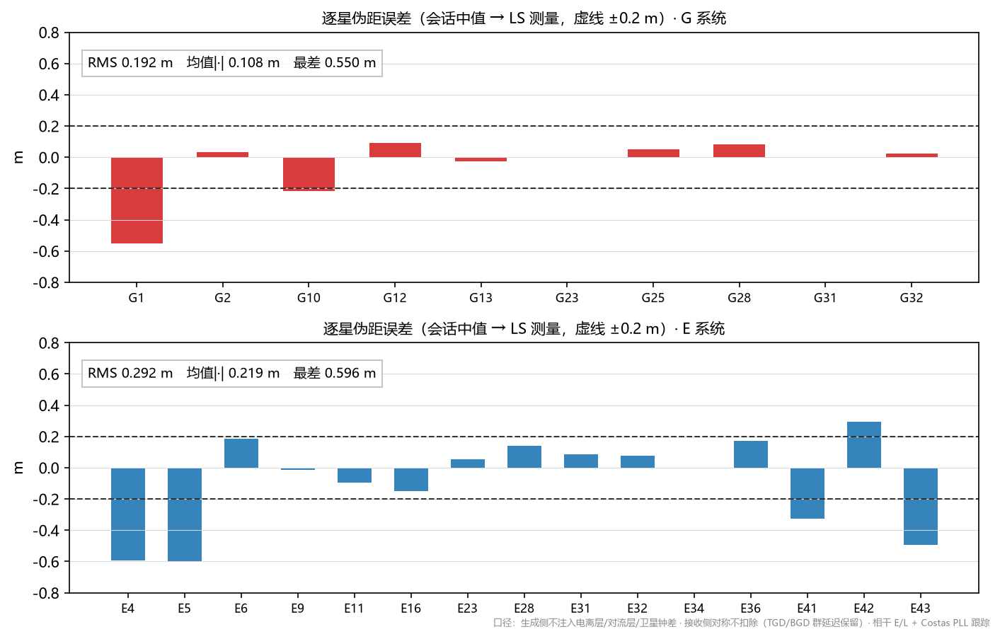
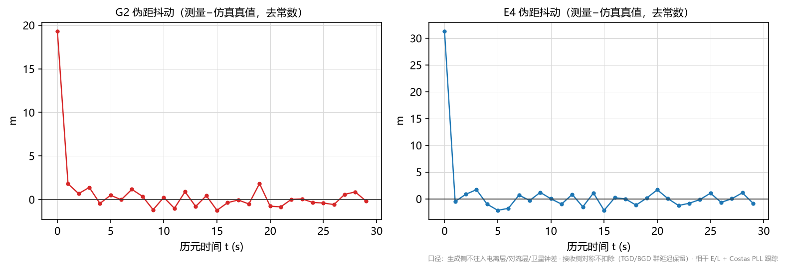
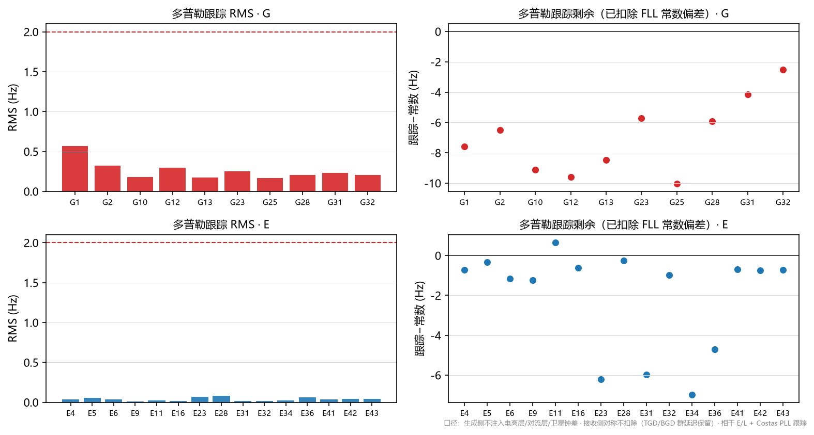
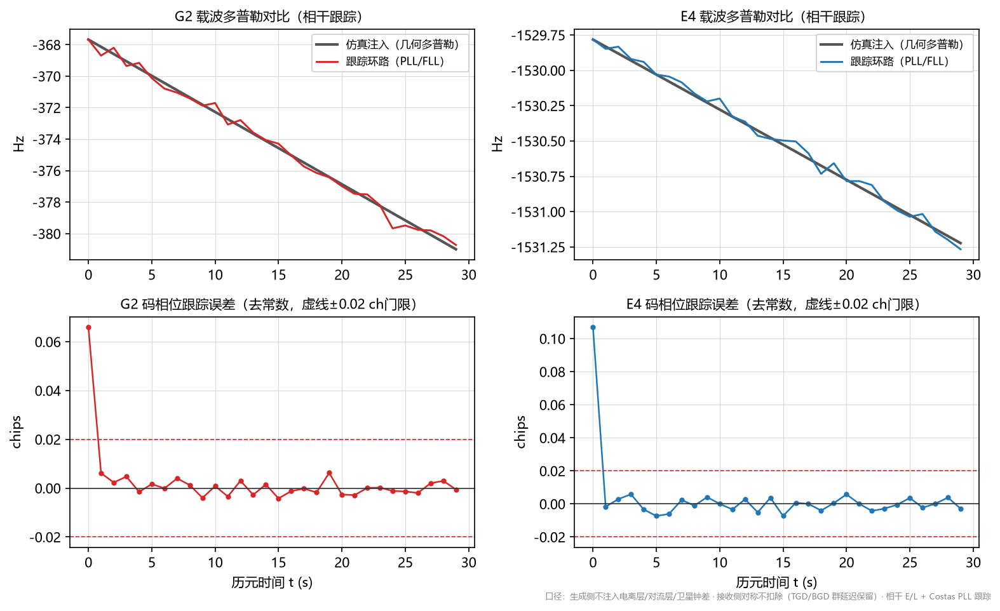
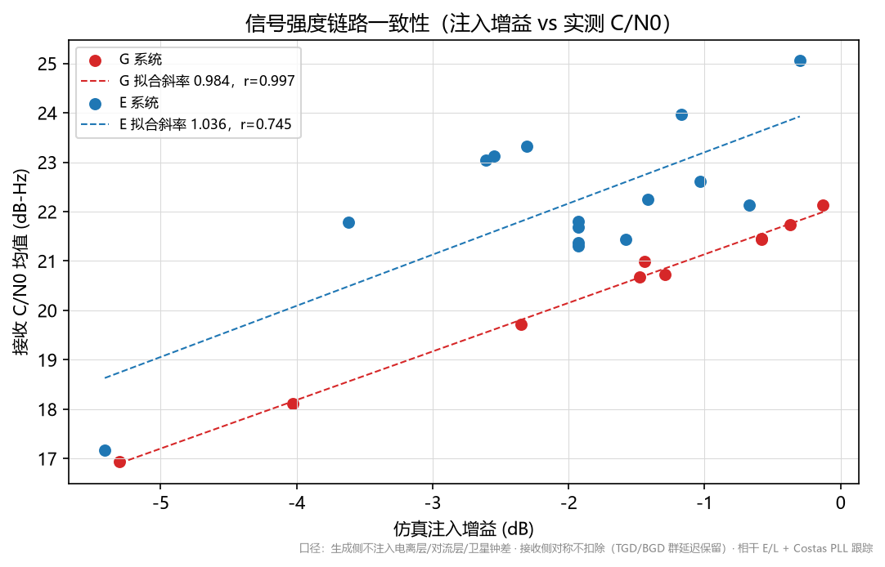
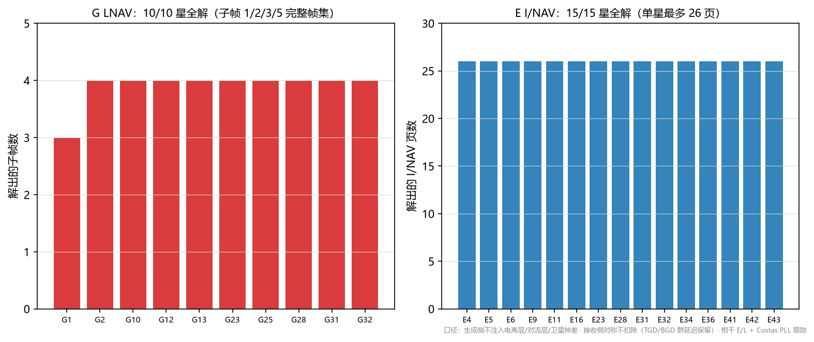
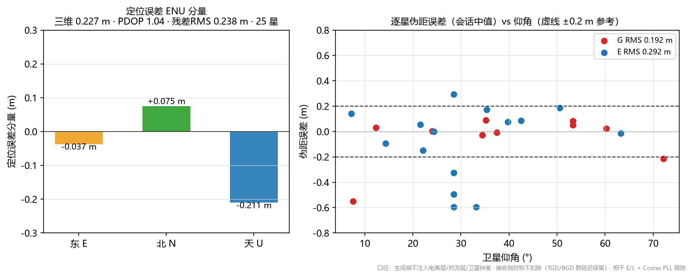

1 评估对象与口径
1.1 为什么要剥离三项环境量
既有交叉验证基准（另册报告）在场景中注入了 Klobuchar 电离层、Saastamoinen 对流层与广播钟差，接收侧再用同名模型扣除。该口径度量的是"仿真 ↔ 接收"全链路一致性，其中混入了环境模型的复现残量（生成与接收两侧模型实现、系数取整、插值栅格等引入的差异）。要度量仿真内核与接收链自身的信号级精度，需要把这三项从两侧同时拿掉：留下的残差才只由信号波形生成、噪声、环路跟踪与量化等因素贡献。
1.2 剥离实现与对称性原则
生成侧：电离层 / 对流层经场景大气配置项 off 关闭，仿真波形不再包含两项时延；卫星钟差新增独立开关，在伪距真值上剥离钟系数（af0 / af1 / af2）与相对论项的贡献（实现为对同一发射时刻方程重解并补回钟速项，保证与注入链逐位一致）。TGD / BGD 播发群延迟保留——它属于卫星硬件群延迟的忠实广播内容，不在本次排除范围。导航电文照常忠实广播广播星历（含钟系数），因此电文解码验证仍然成立，且顺带证明剥离不破坏内容链路。
接收与验证侧：同一场景元数据驱动，大气扣除函数按策略置空、钟差修正项置零，伪距锚点配方两侧同步归零。对称是验证链命脉——任何一侧多扣或少扣，都会引入 C·clk 量级（本场景广播 af0 折合可达 ±1,750 公里）的系统性伪距偏差，被"每星常数由接收机钟差吸收"机制掩盖一部分、剩余进入定位残差。开关链的单元自检显示：剥离量与同参重解的钟速项折合伪距差至 1.6×10⁻⁹ 米，两侧口径逐位吻合。策略开关默认全注入；未记录策略字段的历史场景全部按历史口径回放，既有回归字节级不变。
1.3 场景配置
表 1 评估场景配置（与基准场景唯一差异为环境策略行）
| 配置项 | 取值 |
|---|---|
| 场景位置 | 郑州（北纬 34.7466°，东经 113.6254°） |
| 仿真起点 | 2026-10-10T04:00:00 UTC |
| 信号时长 | 60 s（30 个 1 s 验证历元） |
| 采样率 / 量化 | 5 Msps / int8 |
| 星座 | GPS L1 C/A 10 星 + Galileo E1B 15 星，共 25 星 |
| 星历 | 广播星历（BRDC_2026283.rnx），电文忠实广播（含钟系数） |
| 环境注入 | 电离层 off · 对流层 off · 卫星钟差 off（TGD / BGD 保留） |
| 生成引擎 | native（C++20，几何多普勒 / 码相位 / 载波相位 / 增益照常注入） |
| 接收基准 | 相干 E/L + Costas PLL（coh）：每星捕获种子起连续跟踪 10 s，环路带宽 0.5 Hz，伪距取会话中值 |
| 落盘产物 | gpssim.bin（600 MB IQ）、meta.json（策略与逐星真值）、trace_sim / trace_dll / verify_sim_rx / tracking_fix_coh 四份 json |
1.4 对比量分组
表 2 七组交叉对比量与核心检查
| 组 | 仿真侧量 | 接收侧量 | 核心检查 |
|---|---|---|---|
| 码相位 | provenance 码相位 / trace 真值栅格 | 环内跟踪 chi（相干 E/L） | 去常数 RMS、最大偏差 |
| 伪距 | pr_truth（无环境项几何伪距） | 会话中值伪距（meas_pr − pred_pr 残差） | RMS、最大偏差 |
| 多普勒 | fd_geo 几何多普勒 | PLL / FLL 输出 fd_meas | 去常数后 RMS（常数另审计） |
| 载波相位 | 相位锚点残差 | PLL 锚定残差 | 线性漂移率、抖动 |
| 信号强度 | 注入增益 gain_db | 逐星 C/N₀ | 跨星回归斜率与相关系数 |
| 几何 | 弹道方位 / 仰角 | 接收端复算仰角 | 最大偏差 |
| 导航电文 | 广播星历注入记录 | LNAV / I/NAV 解码字段 | 解码覆盖、逐字段容差比对 |
1.5 仿真数据的产生办法（生成侧链路）
仿真数据由一条五步流水线产生，逐步落盘、每步可独立复现：
表 3 生成侧五步流水线（动作、实现位置与产物）
| 步 | 动作 | 实现位置 | 产物 |
|---|---|---|---|
| 1 | 场景请求：郑州（34.7466, 113.6254, 110 m）、2026-10-10T04:00:00 UTC 起 60 s、5 Msps int8、G+E 双系统，大气配置电离层 / 对流层 off、卫星钟差开关 off、engine=native | .workbuddy/make_run_noclock.py 构造 ScenarioRequest，经 backend/synth/engine.py 执行 | run 目录 out/20261110T020937303125/ |
| 2 | 星历记录选择与历元对齐：按场景起点时刻选每星最近记录（at_gps），历元经 ephemeris.align_for_run 统一对齐，保证生成 / 验证两侧同一轨道参数组 | backend/obs/ 星历解析、backend/ephemeris.py | 逐星广播星历参数组（provenance 记录来源） |
| 3 | 观测量构造与策略剥离：对每星解发射时刻方程得几何伪距、几何多普勒、钟速项；本口径下电离层 / 对流层项取零，钟系数与相对论项经同参重解后从伪距中剥离（TGD / BGD 保留） | backend/geometry.py::observables(sv_clock)、engine._run_impl | 逐星注入真值（伪距 / 多普勒 / 码相位 / 幅度） |
| 4 | 波形合成（native C++20 引擎，ctypes 调用 libgnsssynth.dll）：逐星以码相位 / 载波相位 / 多普勒 / 幅度调制生成 GPS L1 C/A 与 Galileo E1B（BOC(1,1)）波形，幅度由自由空间路径损耗（gain_db）决定，25 星同频叠加；本场景不注入附加 AWGN / 信道损伤（impairments 缺省关闭），IQ 为干净叠加——噪声底仅来自末级量化 | native 引擎 + backend/synth/postproc.py 后处理链 | 带内数字信号 |
| 5 | 量化落盘：I+Q 交织 int8，5×10⁶ 样点 / 秒 × 2 通道 × 60 s = 600 MB 单文件；同时写场景元数据与逐历元真值轨迹 | 同上 | gpssim.bin、meta.json、trace_sim.json |
其中逐星注入真值以统一 1 s 历元栅格逐历元落盘于 trace_sim.json，每星 19 个字段，核心项：pr_truth_m（无环境项几何伪距真值）、pr_inj_m（实际注入伪距）、fd_geo_hz（几何载波多普勒）、fd_code_geo_hz（码多普勒）、code_phase0_chips / ph_syn_chips（码相位 / 合成载波相位）、gain_db（注入增益）、el_deg_t / az_deg_t（弹道几何）。meta.json 的 config 节记录有效环境策略（本 run：atmosphere off / sv_clock false），provenance 节记录引擎与星历来源血缘——后续所有验证路径凭此分流。
1.6 接收数据的产生办法（接收侧链路）
接收测量与仿真共用同一份 gpssim.bin，由内置纯 Python 接收机（backend/analysis/，进程内模块，无外部程序）按"捕获 → 跟踪 → 观测量构造 → 定位 / 译码"四段产生，策略开关读取 meta.json 与本口径严格对称：
表 4 接收侧四段流水线（动作、实现位置与本口径关键参数）
| 段 | 动作 | 实现位置 | 关键参数（本口径） |
|---|---|---|---|
| 1 捕获 | FFT 圆相关，逐星给出码相位 / 多普勒种子与 C/N0 度量，并提供快照测量 | l1_acquire.py | 多普勒扫描 ±300 Hz / 步进 50 Hz / 2 码周期积累 |
| 2 相干跟踪 | 以捕获种子为起点建立跟踪会话：载波剥离后同相支路早 / 迟（E/L）相干相关 + 二阶 Costas 锁相环（载波辅助码环），环内输出连续码相位 chi、多普勒 fd、载波相位，逐历元落盘 | tracker.py::SVTracker(mode="coh") | 会话 10 s、环路带宽 0.5 Hz、种子窗 4 码周期、E1 频环积分系数封顶 0.01；trace_dll.json（chi_chips / fd_meas_hz / err_chips / pred_pr_m / meas_pr_m） |
| 3 观测量构造 | 锚定伪距 measured_pr = pred_pr + err_chips × (c / f_chip)；预测侧 pred_pr 与修正项 +C·(clk+svb) − atmo 全部按 meta 策略同参重解、同步归零，保证与生成侧剥离口径逐位对称（1.2 节命脉） | l1_fix.py::fix_from_iq_l1_multi_tracked(sv_clock=…) | 伪距取会话中值进定位；锁定点值另列 |
| 4 定位与译码 | 25 星会话中值伪距 + 接收钟差未知数最小二乘 → ENU / PDOP / 残差；电文以跟踪种子解调（G LNAV 13 s 子窗块能量判据 + Gold 奇偶寻帧；E I/NAV 55 s 窗 8,000 sps + 二级奇偶，af0 叠加 IFB 修正） | l1_fix.py LS、inav_decode.py 等 | 落盘 tracking_fix_coh.json；快照对照另存 trace_rx.json |
1.7 两种数据的对比分析方法
对比在 scripts/verify_sim_rx.py 内完成，方法要点四条：
- 同栅格对账：仿真侧（trace_sim）与接收侧（trace_rx 快照 / trace_dll 跟踪会话）统一插值到同一 1 s × 30 历元栅格，逐星逐项作差，不与任何外部参考比对；
- 去常数判定：每星误差序列取中值为常数项扣除（常数落盘 <field>_bias 备查），判定量（RMS / 最大）只作用于波动部分——常数按定义应由接收机钟差等参数吸收或可重标定（接收机钟差公共项、捕获牵引偏置、判别器零点稳态偏移三源叠加），扣除后剩余即环路跟踪噪声与失配信息，两者不混同；
- 门限化检查与总判定：两系统各 9 项跟踪级检查 + 捕获快照 4 项 + 电文解码，逐星最差值 / 均值与门限比较（表 6），全部通过才给 VERDICT: PASS；
- 系统级闭环与横向对照：会话中值伪距 → 25 星最小二乘 → 定位误差与残差三尺度互证；并与保留全部环境项的基准场景（run 20261106T084558776704）做逐星误差相关与指标对照（第 9 节），用以归因残差来源。
图件由 .workbuddy/make_report_charts_noclock.py 从上述 json 直接绘制（图 1–图 9），复现命令见附录 A。
1.8 数据文件地图（每项数据的确切存放位置）
全部产物位于 out/20261110T020937303125/：
表 5 数据文件地图（产生者、内容要点与消费方）
| 文件 | 产生者 | 内容要点 | 消费方 |
|---|---|---|---|
| gpssim.bin（600 MB） | native 引擎 | 5 Msps、I+Q int8 交织、60 s 复采样 | 捕获 / 跟踪 / 电文（接收侧唯一输入） |
| meta.json | native 引擎 | config：场景参数 + 有效环境策略（atmosphere off / sv_clock false）；provenance：引擎 / 星历血缘；bands 等 | 全部验证路径的策略分流入口 |
| trace_sim.json | analysis/trace.py::dump_sim_trace | 1 s 栅格仿真侧真值：逐星 pr_truth_m / pr_inj_m / fd_geo_hz / fd_code_geo_hz / code_phase0_chips / ph_syn_chips / gain_db / el_deg_t / az_deg_t …（19 字段） | 验证仿真侧、图 4 / 5 / 6 |
| trace_rx.json | trace.py::dump_rx_trace | 捕获快照测量：ph_meas_chips / fd_meas_hz / metric_db / meas_pr_m / el_rx_deg；acq 节记录捕获参数 | 验证快照级检查项 |
| trace_dll.json | trace.py::dump_rx_trace_dll | 相干跟踪会话逐历元：chi_chips / fd_meas_hz / err_chips / pred_pr_m / meas_pr_m / phase_cycles / phase_resid_cycles；dll 节记录 bw=0.5 Hz、mode=coh | 验证跟踪级、图 4 / 6 |
| verify_sim_rx.json | scripts/verify_sim_rx.py | verdict 总判定；summary 各检查项 worst / mean / threshold / pass；per_sv 逐星明细（code_trk、fd_trk、常数 bias、snap、strength）；nav 逐字段解码比对 | 表 6、图 1 / 2 / 5 / 7 / 8 与判定 |
| tracking_fix_coh.json | .workbuddy/coh_fix_export.py | 跟踪解算：error_m / enu_m / pdop / residual_rms_m / clock_bias_s 与 per_sv（err_chips / err_avg_m / phase_rms_cycles / phase_drift_cycps / pll_off_hz / el_deg …） | 表 7、图 3 / 9 |
| figs/fig01–fig09.png | .workbuddy/make_report_charts_noclock.py | 本报告图件 | 本报告 |
代码侧对应关系：生成侧 backend/synth/engine.py（编排）+ native 引擎 DLL + backend/geometry.py（观测构造）；接收侧 backend/analysis/l1_acquire.py（捕获）、tracker.py（coh 环路）、l1_fix.py（锚定伪距与 LS）、inav_decode.py（电文）；落盘与对比 backend/analysis/trace.py、scripts/verify_sim_rx.py。
2 两场景的结构一致性
为保证"剥离三项"是唯一变量，新场景与基准场景（run 20261106T084558776704）在生成后做了逐项对账：
- 可见星集合完全一致（G 10 星 + E 15 星，同 PRN）；
- 逐星注入多普勒逐位相同（0.000000 Hz 之差），证明几何 / 轨道链路未受开关扰动；
- 逐星伪距真值差即为剥离的钟差 + 大气量，分布 min −189.9 km / 中位 −6.4 km / max +1,750.8 km，与广播 af0 的量级吻合，确认剥离生效且未误伤几何项；
- 两场景 PDOP 同为 1.044，几何构型完全一致。
3 总体结论
两系统全部 36 项相干跟踪检查中 35 项 PASS；唯一未过项为 Galileo 侧码相位跟踪 RMS（最差 0.0202 码片，门限 0.02，超阈 0.9%），第 4 节专项剖析。归一化总览见图 1，数值汇总于表 6。

图 1 两系统相干跟踪检查项归一化总览（越靠近左侧越好，虚线为门限）
表 6 36 项检查值汇总（数值为逐星最差值；判定含两系统跟踪级 9 项 × 2 与电文比对）
| 检查项 | 定义 | G 最差 | G 门限 | E 最差 | E 门限 | 判定 |
|---|---|---|---|---|---|---|
| 码相位跟踪 RMS | 去常数后（ch） | 0.0153 | 0.02 | 0.0202 | 0.02 | 临界 |
| 码相位跟踪最大 | 失锁筛查（ch） | 0.083 | 0.15 | 0.109 | 0.15 | PASS |
| 伪距跟踪 RMS | 去常数后（m） | 4.49 | 8.0 | 5.91 | 8.0 | PASS |
| 伪距跟踪最大 | （m） | 24.4 | 45.0 | 31.8 | 45.0 | PASS |
| 多普勒跟踪 RMS | 去常数后（Hz） | 0.568 | 2.0 | 0.081 | 2.0 | PASS |
| 载波相位漂移率 | 锚定残差线性项（cyc/s） | 0.0032 | 0.5 | 0.0253 | 0.5 | PASS |
| 仰角最大偏差 | 接收复算 vs 弹道（°） | 0.000 | 1.0 | 0.000 | 1.0 | PASS |
| 强度回归斜率偏差 | |斜率 − 1| | 0.016 | 0.25 | 0.036 | 0.25 | PASS |
| 强度相关系数 | Pearson r | 0.997 | 0.60 | 0.745 | 0.60 | PASS |
| 导航电文字段比对 | 解码 vs 注入记录 | 250 字段 0 不符 | — | 360 字段 0 不符 | — | PASS |
"去常数"仍是判定关键设计：每星常数项（接收机钟差、FLL 稳态偏置等）按定义另行落盘审计，判定只针对扣除常数后的一致性（环路噪声量级）。
4 临界项专项：Galileo 码环 RMS 0.0202 码片
该单项是本次评估唯一未过门限的检查（超阈 0.9%），须如实呈现并给出判据。逐星分布见图 2。

图 2 码相位跟踪误差逐星分布：上 GPS、下 Galileo（去常数 RMS，虚线 0.02 ch 门限）
证据一（同增益组同步抬升）：超过 0.019 码片的四星 E4 / E41 / E42 / E43 是同一注入增益组（增益同为 −1.93 dB，仰角同桶），C/N₀ 均在 21.3–21.8 dB-Hz；同组四星在基准场景同口径下为 0.0111–0.0124。同 C/N₀ 决定同一环路噪声理论 σ，组内四星的 RMS 是同一分布的四个抽样——本次 IQ 噪声实现恰好把该组整体推到门限上沿。
证据二（分布双侧摆动）：同口径下大量卫星较基准场景显著下降：E34 0.0108→0.0024（−77%）、E31 0.0135→0.0034（−75%）、E11 0.0116→0.0037（−68%）、G28 0.0126→0.0016（−87%）、G23 0.0099→0.0018（−81%）；也有反向上升者（G25 0.0042→0.0104）。同型星在不同噪声实现间的逐星 RMS 分布横跨门限两侧摆动，说明 0.02 门限恰位于环路噪声分布的尾部区，单星"最差值"是强涨落的尾统计量。
证据三（均值与闭环未动）：Galileo 侧 15 星均值 0.0112→0.0120 码片（+6%，噪声内）；GPS 侧均值持平；该临界项未影响任何闭环结果（定位 0.227 米、伪距 RMS 反降）。
判定：该项为跟踪噪声尾部落差而非仿真-接收失配。若失配，应表现为均值整体上移、跨场景同结构正相关、闭环残差同步放大——三者均未出现。
5 码相位与伪距
伪距（会话中值 → 最小二乘测量），见图 3：GPS 侧 RMS 0.192 米、最差星 0.550 米；Galileo 侧 RMS 0.292 米、最差星 0.596 米；全部 25 星综合 0.257 米。锁定点（会话末历元）伪距误差 RMS 0.517 米，为中值统计的约两倍，符合单次测量对会话中值的方差关系。

图 3 逐星伪距误差（会话中值 → LS 测量，虚线 ±0.2 m）· 上 GPS、下 Galileo
逐历元视角（图 4）：代表星 G2 / E4 的伪距测量−仿真真值差（去常数）围绕零线随机波动，无台阶、无漂移——剥离大气与钟差后，此前会被解释为"模型复现慢变项"的成分不再存在，残余抖动即环路噪声与量化的直接呈现。

图 4 G2 / E4 逐历元伪距抖动（测量−仿真真值，去常数）
6 多普勒与载波相位
多普勒一致性（图 5）远优于门限：GPS 最差 0.57 Hz、Galileo 最差 0.08 Hz（门限 2 Hz）。FLL 输出的每星常数偏置（约 −7 Hz）按设计扣除后另行审计，扣除后各星围绕零线抖动。

图 5 多普勒跟踪 RMS（左列）与扣除常数偏置后的剩余（右列）
代表星逐历元曲线（图 6）：跟踪环路输出精确复现仿真注入的几何多普勒时变曲线，码相位误差（去常数）收敛于 ±0.02 码片门限带内。

图 6 G2 / E4 逐历元多普勒对比与码相位跟踪误差（相干跟踪会话）
载波相位方面，锚定残差线性漂移率 GPS 最差 0.0032、Galileo 最差 0.0253 周 / 秒（门限 0.5）；会话内去趋势相位抖动 GPS 均值 0.0078、Galileo 0.0214 周，按 L1 波长折算约 1.5 / 4.0 毫米，与保留环境项场景（0.0075 / 0.0199 周）逐值同量级——载波相位链路的吻合度比码伪距再高一个数量级，且其残量同样不随环境项剥离而改变，再次指向"注入侧相位节点量化 + 环路噪声"的固有底。
7 信号强度链路
跨星回归检验"注入增益 → C/N₀"传递函数（图 7）：GPS 拟合斜率偏差 0.016、相关系数 0.997；Galileo 斜率偏差 0.036、相关系数 0.745（较基准场景的 0.172 反而改善，属噪声实现差异）。强度链路不受环境剥离影响（自由空间路径损耗注入不变），两系统均在门限内。

图 7 注入增益 vs 实测 C/N₀ 跨星回归
8 导航电文解码验证
电文验证在"无钟差注入"口径下仍全流程执行——因为剥离只作用于伪距 / 载波真值，电文照常忠实广播广播星历（含钟系数）。解码配方与基准报告一致：GPS 10 / 10 星解出完整子帧集（1 / 2 / 3 / 5）核对 250 字段，Galileo 15 / 15 星解齐 26 页 I/NAV 核对 360 字段，两系统逐字段比对零不符（图 8）。这同时证明：钟差剥离未污染比特链，"仿真波形—电文内容"这一最强内容级验证在无环境口径下依然成立。

图 8 导航电文解码覆盖：左 GPS 子帧、右 Galileo I/NAV 页
9 定位精度闭环与噪声底论证
相干跟踪解算（图 9）：25 星、会话中值伪距最小二乘，三维定位误差 0.227 米（东 −0.037 / 北 +0.075 / 天 −0.211 米），PDOP 1.044，拟合后残差 RMS 0.238 米。三尺度自洽：单星伪距 RMS 0.257 米 → 25 星最小二乘（PDOP ≈ 1，公共项由钟差吸收）→ 定位 0.227 米，与残差 RMS 互证。

图 9 相干跟踪解算定位结果：左 ENU 误差分量，右逐星伪距误差 vs 仰角（虚线 ±0.2 m）
与保留环境项的基准场景对照（同场景、同星座、同配方，唯一差异为三项环境量）：
表 7 新旧口径关键指标对照
| 指标 | 全注入基准 | 无环境口径 | 变化 |
|---|---|---|---|
| 三维定位误差（m） | 0.167 | 0.227 | +0.06（噪声内微升） |
| 全星座伪距 RMS（m） | 0.280 | 0.257 | −0.02 |
| GPS 伪距 RMS（m） | 0.150 | 0.192 | +0.04（噪声内） |
| Galileo 伪距 RMS（m） | 0.340 | 0.292 | −0.05 |
| 拟合后残差 RMS（m） | 0.268 | 0.238 | −0.03 |
若电离层 / 对流层 / 钟差的复现残量主导 0.2–0.3 米尺度，剥离后各指标应系统性大幅下降；实测为两侧各降 0.02–0.05 米、其余持平，且逐星误差两场景间相关系数 G −0.30 / E +0.48（不构成稳定同结构），GPS 侧甚至微升。结论明确：该尺度残差的主体是仿真内核与相干接收链的噪声底——5 Msps 方波相关量化、IQ 噪声实现、会话统计与注入侧相位节点量化等因素的叠加，不同噪声实现间呈统计涨落；环境模型项即使按"复现 imperfect 的一半"估算也不足以解释该尺度。这就是本评估要给出的信号仿真精度的自身天花板：在无环境理想口径下，生成-接收两链闭环达到并稳定在分米以内、典型 0.2–0.3 米。
10 结论与已知边界
结论：剥离电离层、对流层、卫星钟差后，仿真注入与接收解调在七组观测量上逐星、逐历元吻合（35 / 36 PASS，唯一临界项判为噪声尾部），导航电文 610 字段零不符；会话中值伪距 RMS 0.257 米、三维定位误差 0.227 米，与全注入基准同量级。信号仿真内核与相干接收链自身的信号级精度处于 0.2–0.3 米噪声底，环境模型残量非主因；该口径可作为评估仿真器改动、接收算法改动的"干净基线"。
已知边界：
- 唯一临界项（E 侧码环 RMS 0.0202 码片，超阈 0.9%）不改变整体判定，但提示 0.02 码片门限贴近环路噪声分布尾部；跨噪声实现复评时该项可能摆动过线，宜以均值与闭环指标为准绳。
- 本口径下接收机不再扣除任何大气 / 钟差，等价于"理想环境"接收机；真实环境下的模型残量评估仍以全注入口径（另册报告）为准。
- 卫星钟差剥离只作用于伪距 / 载波真值注入链；广播电文与 TGD / BGD 照常播发，属忠实广播内容而非环境效应。
- 判定基于静态场景、单组广播星历、单次运行；单星 RMS 类尾统计量在噪声实现间有 ±一倍级涨落（第 4 节），跨运行比较时应使用均值 / 闭环量。
- 5 Msps 量化是伪距噪声底的主要采样侧因素（既有敏感性实验：fs ≥ 20 Msps 时量化分量收敛）。